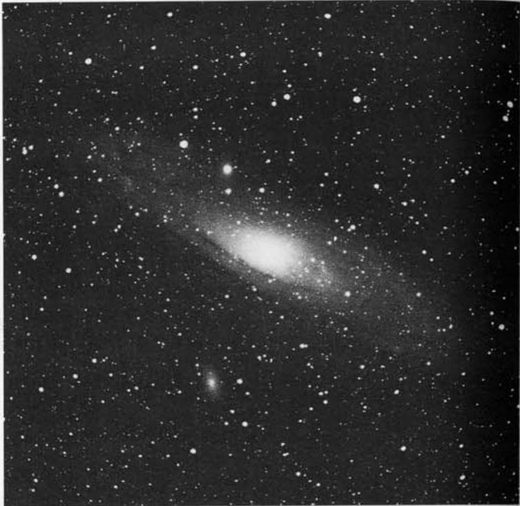

仙女座大星系 · Andromeda Galaxy (NGC 224)

"To the true romantic of astronomy, M31 will always be known as the 'Great Nebula in Andromeda'—a name bestowed upon it before spectroscopy revealed that this luminous mist was not the protoplasmic soup of a solar system in formation but a distant island universe like our own Milky Way Galaxy."
对于真正的天文浪漫主义者而言，M31始终被誉为"仙女座大星云"——这个命名源自光谱分析尚未揭示其本质的时代，当时人们尚未知晓这片璀璨星云并非太阳系形成的原生质汤，而是与银河系相似的遥远宇宙岛。
At a staggering distance of 2.3 million light-years, the Andromeda Galaxy stands as the most distant object visible to the unaided human eye—a celestial lighthouse that has guided astronomical understanding since ancient Persian astronomer Al-Sufi first recorded it in the tenth century. This magnificent spiral behemoth dominates the Local Group of galaxies, containing approximately 300 billion suns spread across 130,000 light-years of cosmic real estate.
在惊人的230万光年之外，仙女座星系成为人类肉眼可见的最遥远天体——一座指引天文学认知前进方向的宇宙灯塔，自十世纪波斯天文学家苏菲首次记录以来便照耀着人类认识宇宙的进程。这座壮丽的旋涡巨无霸在本星系群中占据主导地位，拥有约3000亿颗恒星，横跨13万光年的宇宙疆域。
"It is rushing toward us at 185 miles per second."
它正以每秒185英里的速度向我们奔涌而来。
This is not merely an abstract number. The Andromeda Galaxy is on a direct collision course with our Milky Way, though the rendezvous won't occur for approximately 4 billion years. When these two galactic titans finally meet, they will dance together in a gravitational waltz that reshapes both into a new elliptical giant—Milkdromeda.
这不仅仅是一个抽象的数字。仙女座星系正沿着一条直接轨迹撞向银河系，尽管这场宇宙约会将在约40亿年后才会发生。当这两大星系霸主最终相遇时，它们将在引力的引导下共舞，重塑彼此，融合为一个新的椭圆巨星——"银河-仙女座"。
| 参数 Parameter | 值 Value | 说明 Description |
|---|---|---|
| 类型 Type | 旋涡星系 Spiral Galaxy | SA(s)b |
| 所属星座 Constellation | 仙女座 Andromeda | 链状少女的腰带 |
| 赤经 Right Ascension | 0h 42m.7 | - |
| 赤纬 Declination | +41° 16′ | - |
| 星等 Magnitude | 3.4 | 肉眼可见 |
| 表面亮度 Surface Brightness | 13.6 | - |
| 视直径 Apparent Diameter | 3° × 1° | 约6个月球直径 |
| 距离 Distance | 230万光年 2.3 million l.y. | - |
| 真实直径 True Diameter | 130,000光年 | - |
| 恒星数量 Stars | ~3000亿 ~300 billion | - |
| 发现者 Discoverer | 苏菲 Al-Sufi | 波斯天文学家，十世纪 |
Historical Observations 历史观测
Messier: [Observed 3 August 1764] "The beautiful nebula in the belt of Andromeda, shaped like a spindle. M. Messier examined it with several instruments but he was not able to detect any stars. It resembles two cones or pyramids of light, joined at their bases, and the axis of which lies northwest to southeast."
梅西耶：[1764年8月3日观测] "位于仙女座腰带处的美丽星云，呈纺锤状。梅西耶先生用多种仪器进行观测，但未能分辨出任何恒星。其形似两个锥体或光金字塔在底部相连，主轴呈西北-东南走向。"
Charles Messier's careful documentation transformed what had been a mere smudge of light into a catalogued celestial wonder. Though he couldn't resolve individual stars, his methodical observations laid the groundwork for future generations to understand this island universe's true nature. The galaxy had been first noted by Simon Marius in 1612, but Messier's entry in his famous catalog cemented its astronomical importance.
查尔斯·梅西耶的细致记录将原本只是模糊光斑的天体转变为已被编目的宇宙奇观。尽管他无法分辨出单颗恒星，但他的系统观测为后世理解这座宇宙岛的本质奠定了基础。该星系虽早在1612年便由西蒙·马里乌斯首次记录，但梅西耶将其收录于著名星表之举确立了其天文学地位。
NGC: "Magnificent object, extremely bright, extremely large, very much extended."
NGC：[描述] "壮丽天体，亮度极高，尺度极大，延展极广。"
Structure and Companions 结构与伴星系
The Andromeda Galaxy presents itself to us nearly edge-on, yet astronomers can discern enough structure to conclude that our own Milky Way must be remarkably similar in shape and architecture. If you were standing on a hypothetical planet in the Andromeda Galaxy and looked toward the Milky Way, you would see our home galaxy appearing much the same way we see M31—two cosmic twins observing each other across the void.
仙女座星系以近乎侧向的姿态展现在我们面前，但天文学家仍能辨认出足够的结构细节，从而推断我们自己的银河系在形状与构造上必然与之惊人相似。倘若你站在仙女座星系中一颗假设行星上遥望银河系，所见之景应与我们观测M31时别无二致——两大宇宙双胞胎隔着虚空遥遥对望。
Under reasonably dark skies, M31 appears as a cocoon of nebulous vapor about 1° west of the 4.5-magnitude star Nu (ν) Andromedae—the "belt" star of the Chained Maiden. On the most transparent nights, this galactic leviathan stretches across 3° of sky, nearly six moon diameters in length.
在足够黑暗的夜空下，M31呈现为链状少女腰带处4.5等星仙女座ν星以西约1°的一片茧状星云气团。在最澄澈的夜晚，这头星系巨兽延展跨越3°天区——近乎六个月球直径之和。
"A good pair of binoculars will show some of the galaxy's subtle detail. Even 7×35 binoculars will reveal its elliptical disk whose surface brightness gradually fades away from a star-like core."
优质双筒望远镜能展现该星系的精妙细节，即便是7×35规格的双筒镜也能显现其椭圆盘面结构——其表面亮度自类星核向外逐渐衰减。
Two notable companion galaxies accompany M31 on its cosmic journey: M32 and M110. M32 appears as a slightly swollen 8th-magnitude star on M31's outermost bright rim, approximately 8 arcminutes south and slightly east of the nucleus. M110, similarly bright but larger, presents as an elliptical haze 37 arcminutes northwest of M31's core. Both are easily within reach of modest optical aid.
两个著名的伴星系伴随着M31在宇宙中旅行：M32与M110。M32看似一颗微微膨胀的8等星，位于M31最外围亮缘，约在星系核以南8角分并略偏东处。M110亮度相仿但尺寸更大，呈椭圆形雾斑状位于M31星系核西北方向37角分处。两者均在小型光学设备的观测能力范围内。
Observing Experience 观测体验
*"In the 4-inch at 23× a bright yellow 'star' marks the very center of the Andromeda Galaxy. It lies inside several tightly wrapped pale yellow haloes, which start out circular close to the core but become progressively more elliptical and more skewed
🔒 受限于篇幅，本文仅展示部分样章。O'Meara 先生完整的观测手记、实测数据及未公开的独家配图，请参阅原著双语典藏版。
👉 立即在闲鱼获取《DEEP-SKY COMPANIONS》中英双语高清典藏版